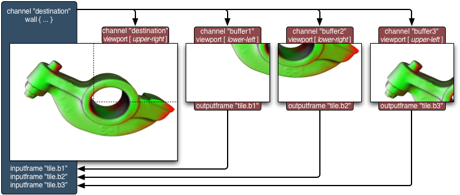
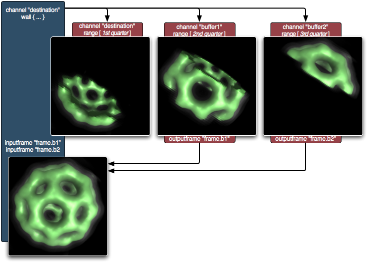
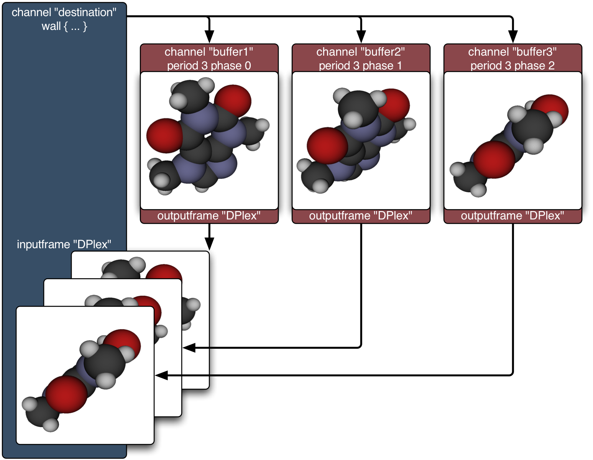
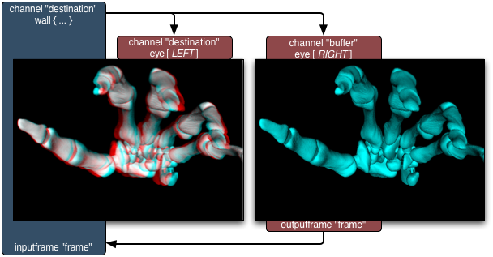
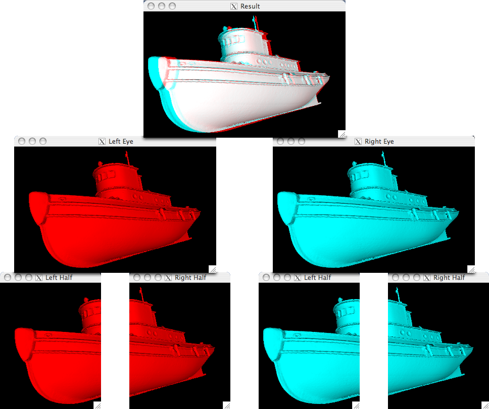
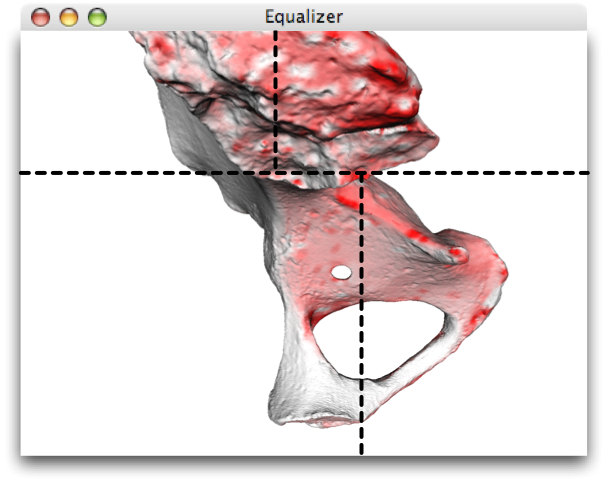
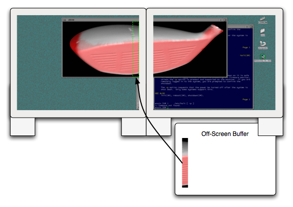
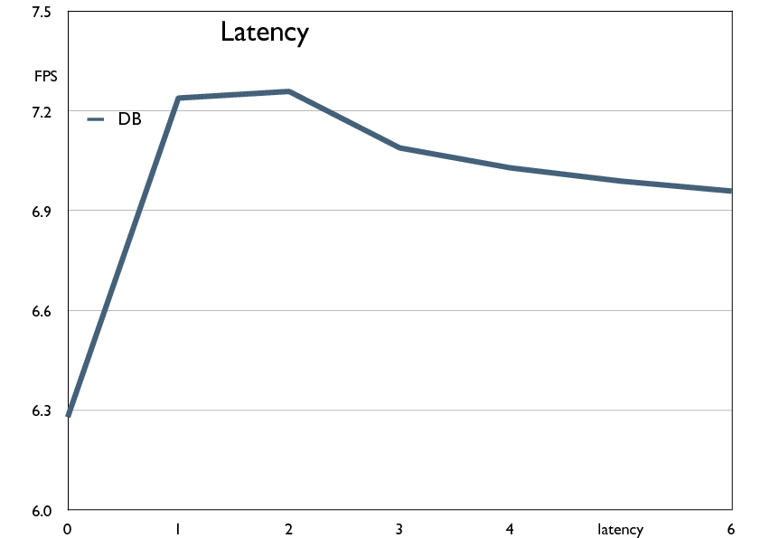

Equalizer implements a wide range of task decomposition algorithms to parallelize the rendering of large data sets. Multiple graphics cards, processors and memory can be combined to render one OpenGL scene. The Equalizer framework distributes the rendering task across a number of rendering units (decomposition), collects the results and recombines them on the final view (recomposition).
Back to topEqualizer uses the concept of compounds to configure the parallelization of the rendering tasks. The following compounds are available:
| 2D decomposes the rendering in screen-space, that is, each contributing rendering unit processes a tile of the final view. Equalizer automatically recomposes the tiles side-by-side on the destination view. |  |
|  | DB decomposes the rendered database so that all rendering units process a part of the scene in parallel. The depth buffer information is used to composite the individual images correctly. Other re-assembly algorithms, for example depth-sorted alpha blending suitable for volume rendering, can be used. |
| DPlex time-multiplexes multiple rendering resources to produce a steady stream of output images. The rendered images are simply copied to the destination view. An offscreen-rendering buffer can be used on the destination graphics card to utilize all rendering resources. |  |
|  | Eye compounds are used during stereo rendering. The individual views for each eye are assigned to different rendering units and later copied to the appropriate stereo buffer. For other stereo modes, such as red/green stereo or auto-stereo displays, a different re-assembly method can be used. |
Equalizer implements a number of additional features to better utilize the rendering resources with the basic decomposition modes mentioned in the previous chapter. The following gives a short overview of some of the possible optimisations.
|
The basic decomposition schemes described above can be combined in any possible way to address different bottlenecks within the rendering process. For example, an Eye compound can be combined with a DB compound to first decompose the rendering for the left and right eye, and then further sub-decompose the rendering for each individual eye point. |
 |
|  |
The Equalizer server can dynamically adjust the decomposition parameters based on the current workload distribution. This load-balancing can happen automatically (based on time measurements) or programatically (based on application input). |
|
Advanced load-balancing uses off-screen rendering buffers on graphics cards displaying the final result. These buffers contribute to the rendering of other output channels, enabling the optimal usage of all rendering units on a multi-pipe machine. |
 |
|  |
Equalizer schedules the rendering resources asynchronously. Resources
which are independent from others start rendering the next
frame immediately after they finish a frame. By hiding the unavoidable
imbalances in the task decomposition, this execution mode provides a
much better resource utilisation than the traditional, frame-synchronous
approach. |
More to come...
{kind=link}
{kind=link}
{kind=link}
{kind=link}
{kind=link}
{kind=link}
{kind=link}
{kind=link}